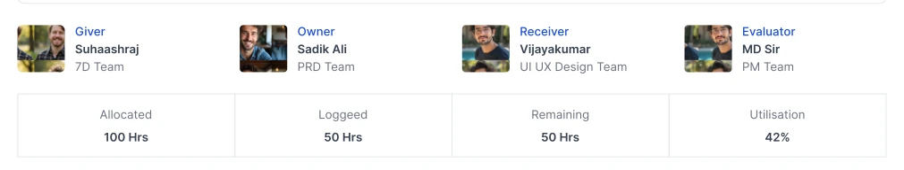
01 / PEOPLE & OWNERSHIP
Who holds responsibility?
Four named roles help the reviewer understand ownership and handoffs without hunting through separate records.
Original Figma detail · Zoom to inspect ↗Designing a connected enterprise experience for goals, process ownership, execution, and approval.
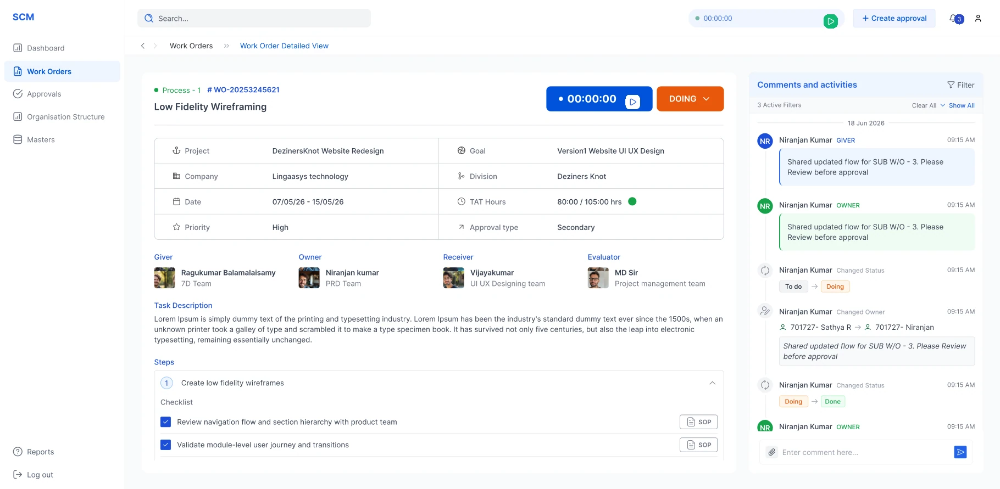
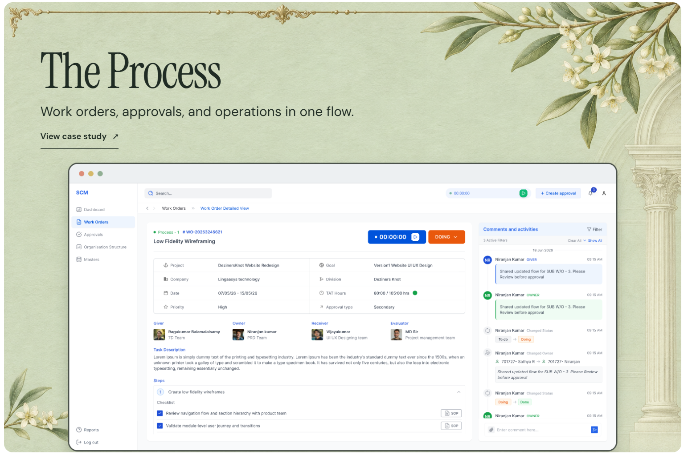
The Process / selected work cover
The leadership vision was to connect organisational structures, measurable goals, reusable process sequences and work approvals. Each layer affected what people could configure, execute or review.
My work was to translate distributed requirements into connected workflows and interfaces, while preserving the depth enterprise operations require.
The challenge lived between modules, not just inside them.
System map / reconstructionAn evaluator needs to understand the work already completed, the people involved, and what will happen after their decision.
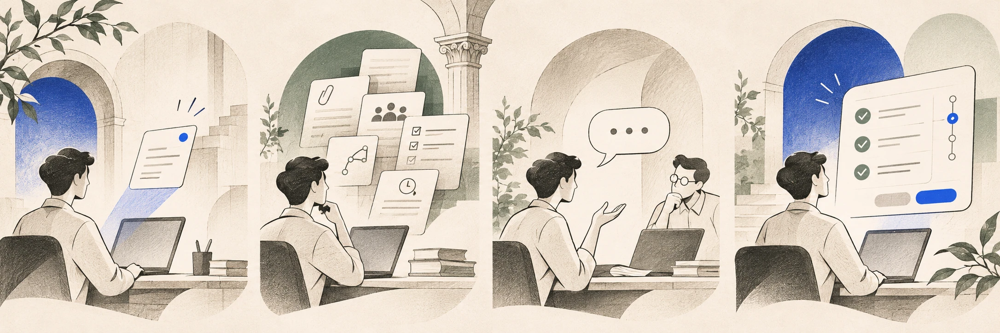
Another person has finished a stage of work.
Roles, history and attachments shape the decision.
The flow must allow a question without a rejection.
The decision controls where the work goes next.
Conceptual scenario illustration created for this case study. It is not an observed user interview, historical interface or measured journey.
The legacy approval experience had become crowded while serving many kinds of operational work. In The Process, I designed a revised interface that brings task context, the people involved, important evidence and decision history into one review experience.
The interface below is the actual revised design. A verified historical legacy screen is not included, so this is not presented as a before-and-after test.
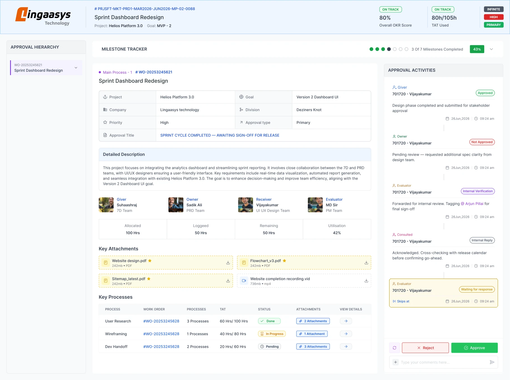

Four named roles help the reviewer understand ownership and handoffs without hunting through separate records.
Original Figma detail · Zoom to inspect ↗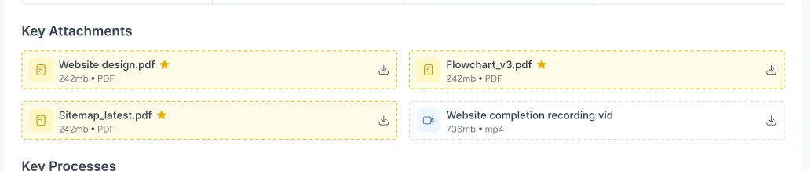
Key Attachments distinguish important decision references without removing access to the complete activity record.
Original Figma detail · Zoom to inspect ↗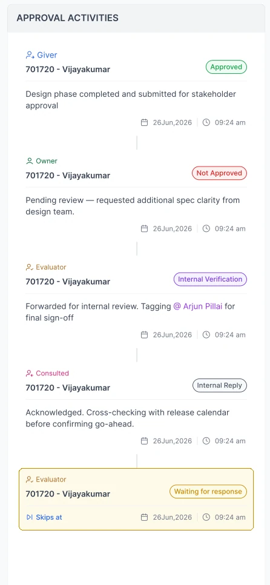
Approval activities surface previous responses, comments and status so the evaluator can understand the context of the current decision.
The important UX choice was preserving context while giving the current action a clearer place in the hierarchy.
Entire source detail shown · Zoom to inspect ↗The core trade-off: keep enough context to support a responsible decision without making every piece of information compete equally for attention.
Design rationale / not usability-testedThe evaluator has three responses. Explore each one to see how the work moves—or pauses—after review.
These controls come from the original approval design. The choice has consequences beyond this screen.
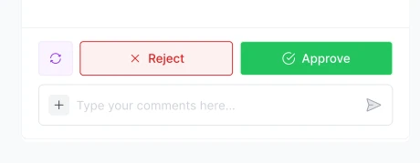
The configured approval type chooses one of these routes. They are alternatives, not consecutive stages.
The Work Order goes back to its Owner for rework rather than moving to the next step.
The evaluator asks another designated person for context without rejecting the work.
Source: Work Order Details.svg · Click to inspect the checklist controls.
My initial mapping connected Standard Operating Procedures to a broader Process Step. After a request for finer detail through my manager, I revised the interaction so each checklist item could open its own SOP in a modal.
A process is a chain of handovers. I proposed a Giver, Owner, Receiver and Evaluator framework so execution, handoff and quality review remained separate.
For time-bound work, I also proposed that the Key Process Owner could reassign a Work Order to another member of the same team when an assigned Owner was unavailable.
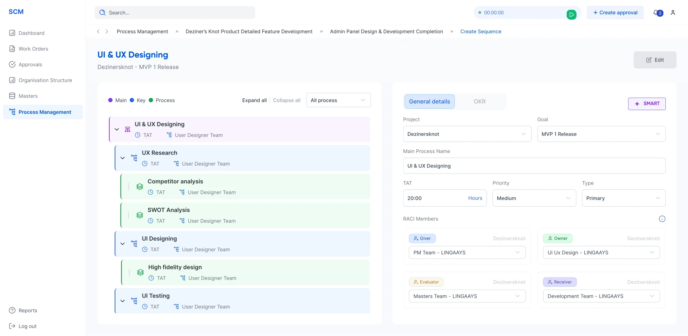
Source: Sequence details.svg · Hierarchy and configured roles
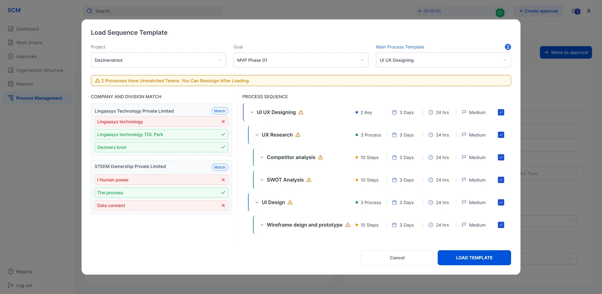
Company, division and team mapping considerations become visible in the template loading interface.
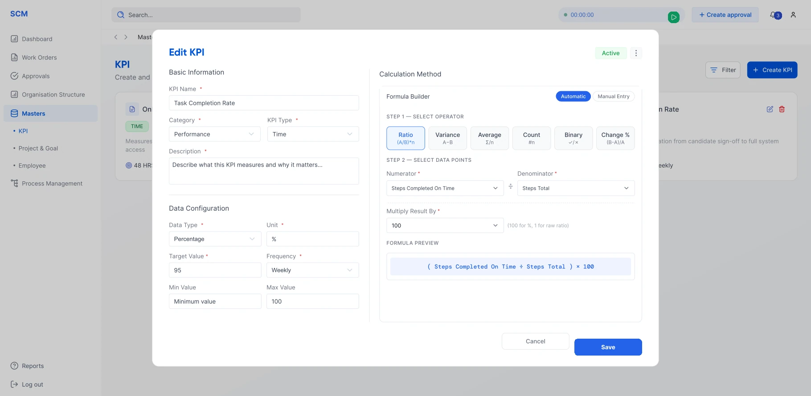
Calculation options, data points and a formula preview keep a business rule understandable before saving.
An overview of the product's key interfaces, grouped by where work is defined, executed, measured and reviewed.
Portfolio selection from original Figma exports. The complete 34-file internal source set is not embedded here because it may contain confidential organisational details. Screens shown here are reviewed source selections, not proof of production release or measurable results.
From January to June 2026, I worked through workflow and interface iterations with my manager, coordinated design revisions with other designers and submitted directions for MD approval.
The handoff included interface designs and an AI-assisted HTML/CSS/JavaScript boilerplate. I later moved to BA-focused work; I do not have verified feature-level production or post-launch performance measures.
Connected interface structures, checklist-level SOP access, responsibility proposals, Key Attachments, and approval UX.
Screens, workflow explanations and an AI-assisted frontend starting point for the development team.
Task success, efficiency gains, adoption and feature-level production outcomes.
A resource pool constrains ownership. A checklist needs precise guidance. A reviewer needs the right evidence. An approval determines whether another person's work can begin.
My biggest lesson was to design these relationships together—not treat each module as an isolated screen.
Back to the beginning ↗